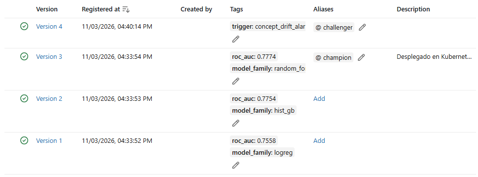

Riesgo de default de tarjeta de crédito
Del experimento a producción: un modelo registrado, desplegado en Kubernetes y vigilado frente al drift.
Luis Bryan Cueva Parada · Proyecto final de MLOps
El problema: anticipar quién dejará de pagar
Un modelo guardado en un cuaderno no ayuda a nadie. El reto es llevarlo a un servicio que escale, se pueda auditar y avise cuando empeora.
clientes de tarjeta de crédito de un banco de Taiwán
variables: perfil, pagos, facturas y abonos de 6 meses
cae en default el mes siguiente: clases desbalanceadas
Escalable
3 réplicas detrás de un balanceador, con escalado por comando.
Auditable
Cada predicción dice qué modelo y qué pod respondieron.
Fiable
Se recupera solo de caídas y detecta cuándo el modelo se degrada.
El dataset: qué sabemos de cada cliente
Cada fila es un cliente, con sus últimos 6 meses. Montos en dólares taiwaneses (NT$).
| Grupo | Contenido | Variables |
|---|---|---|
| Perfil | Cupo, edad, sexo, educación, estado civil | LIMIT_BAL, AGE… |
| Historial | Al día (−2 a 0) o meses de atraso (1 a 8) | PAY_1…PAY_6 |
| Facturas | Cuánto le facturaron cada mes | BILL_AMT1…6 |
| Pagos | Cuánto pagó cada mes | PAY_AMT1…6 |
| A predecir | ¿Deja de pagar el mes siguiente? | default (1 = sí) |
Un cliente de ejemplo
Mujer de 35 años, universitaria, cupo de 120.000.
Al día los 6 meses. Facturas de unos 40.000 y pagos de unos 2.000.
20,8 %
de riesgo según el modelo: PAGA
La arquitectura: dónde vive cada pieza
Todo corre en un clúster local de Kubernetes, en el namespace mlops. El modelo se guarda en MLflow y la API lo pide por su alias.
El ciclo: cada etapa es un paso ejecutable
El proceso no vive en un cuaderno: son scripts y manifiestos versionados en Git.
Limpiar y separar
prepare_data.py8 runs en MLflow
train.pyVersiones y alias
register.py3 imágenes
Dockerfile3 réplicas
k8s/*.yamlAPI y UI
api/main.pyDos alarmas
drift/*.pySi salta la alarma de concept drift → retrain.py entrena un challenger → se compara con el champion → una persona decide si mueve el alias.
Código
Git y CI en GitHub Actions
Datos
Hashes SHA-256 en manifest.json
Modelo
Versiones en el Model Registry
EN VIVO .\scripts\deploy.ps1 -SkipTraining despliega todo sin reentrenar
Datos: una separación reproducible y auditable
Los tres grupos conservan la misma proporción de default, y siempre salen iguales gracias a la semilla.
- Estratificada: 22,1 % de default en los tres grupos.
- Semilla 42: la misma separación en cualquier máquina.
- Hashes SHA-256: si cambia un dato, cambia la huella.
- Comprobado en CI: GitHub regenera la separación y compara.
{
"seed": 42,
"train_rows": 18000,
"train_default_rate": 0.2212,
"train_sha256": "18a76458dbd7…",
"test_sha256": "158521a0141c…"
}
MOSTRAR data/reference/manifest.json
Experimentos: 8 runs, 3 tipos de modelo
MLflow guarda de cada run sus parámetros, métricas, datos y commit. Ganó un random forest de 300 árboles.
El champion, en detalle
| Métrica | Valor |
|---|---|
| ROC-AUC | 0,777 |
| Recall | 0,594 |
| Precision | 0,492 |
| F1 | 0,538 |
| Accuracy | 0,774 |
Con umbral 0,5, detecta el 59 % de los morosos. Clases compensadas con class_weight.
MOSTRAR MLflow → credit-default-training, ordenado por roc_auc
¿Cómo sabemos si el modelo es bueno? ROC-AUC
El banco necesita saber a quién vigilar primero: ordenar a los clientes de mayor a menor riesgo. Esa es la métrica que elegí.
Qué mide
Tomo un cliente que pagó y otro que no. ¿El modelo le da más riesgo al que no pagó?
Por qué no contar aciertos
| Estrategia | Accuracy | Morosos detectados |
|---|---|---|
| Decir siempre «paga» | 77,9 % | 0 % |
| Nuestro modelo | 77,4 % | 59 % |
Con clases desbalanceadas, accuracy premia ignorar a los morosos.
ROC-AUC tampoco depende del umbral: dónde poner el corte lo decide el negocio.
Registry: el alias decide qué va a producción
Cada versión queda ligada a su run. La API pide @champion, nunca una ruta de archivo.

Captura real del Model Registry en el clúster.
Random forest. Es el que está en producción.
Reentrenado tras el drift. Candidato, sin promover.
Cambiar de modelo
1. Mover el alias a la versión nueva.
2. Reiniciar los pods de forma gradual.
Sin reconstruir la imagen ni cortar el servicio.
MOSTRAR localhost:30500 → Models · localhost:30080/info
API: el modelo convertido en servicio
FastAPI recibe los datos, los valida y responde con la predicción y su trazabilidad.
| Endpoint | Para qué |
|---|---|
| POST /predict | Predicción, hasta 1.000 clientes |
| GET /info | Modelo, versión y run servidos |
| GET /ready | ¿Ya cargó el modelo? (readiness) |
| GET /health | ¿Está vivo? (liveness) |
Validación: un dato inválido, como edad 15, recibe un error 422 y nunca llega al modelo.
"predictions": [{
"default_probability": 0.208,
"prediction": 0,
"label": "PAGA"
}],
"pod_name": "credit-api-5668f65d99-q54gt",
"model_alias": "champion",
"model_version": "3",
"run_id": "54686821fe33…"
EN VIVO localhost:30080/docs
Docker: el modelo no va dentro de la imagen
La imagen lleva código y dependencias. El modelo llega de MLflow al arrancar, así código y modelo cambian por separado.
# Misma versión que al entrenar FROM python:3.11-slim # Dependencias primero: esta capa se cachea COPY requirements/api.txt requirements.txt RUN pip install -r requirements.txt # Solo el código de la API COPY src/api ./api # Sin privilegios USER appuser CMD ["uvicorn", "api.main:app", ...]
| Imagen | Contiene |
|---|---|
| credit-api:1.0 | La API |
| mlflow-server:3.17.2 | Tracking y Registry |
| credit-ui:1.0 | La interfaz |
.dockerignoredeja fuera datos, secretos ymlruns.- Reproducible: las 3 se construyen también en el CI.
MOSTRAR Dockerfile y .dockerignore
Kubernetes: declaro el estado y él lo mantiene
No doy pasos: pido 3 réplicas sanas. Si la realidad cambia, Kubernetes la corrige.
replicas: 3
strategy:
rollingUpdate:
maxSurge: 1
maxUnavailable: 0 # siempre 3 listos
readinessProbe: /ready # sin modelo, no recibe
livenessProbe: /health # sin respuesta, reinicia
resources:
requests: {cpu: 250m, memory: 768Mi}
limits: {cpu: 500m, memory: 768Mi}
| Objeto | Qué hace |
|---|---|
| Deployment | Mantiene las réplicas |
| Service | Dirección fija que reparte el tráfico |
| PVC | Disco persistente de MLflow |
Un incidente real
MLflow moría con 768Mi (OOMKilled, código 137). Lo medí y lo subí a 2Gi: la CPU perdona, la RAM no.
MOSTRAR k8s/20-api.yaml · kubectl get pods -n mlops
Demostraciones: los cuatro requisitos, medidos
Cada resultado sale de un script repetible que guarda su evidencia en docs/evidence/.
Réplicas
pods en Running, sirviendo @champion v3
demo_1Balanceo
30 peticiones repartidas entre los 3 pods
demo_2Self-healing
correctas / fallidas, con un pod borrado en pleno tráfico
demo_3Escalado
réplicas; con 5, el tráfico llegó a los 5 pods
demo_4El Service balancea por conexión, por eso las demos abren una conexión nueva en cada petición.
EN VIVO .\scripts\demo_1_replicas.ps1 a demo_4_scaling.ps1
Data drift: ¿cambiaron los clientes que llegan?
Comparo cada variable contra los datos de entrenamiento. Salta si el cambio es real (KS, Chi²) y grande (PSI ≥ 0,10).
| Escenario | Resultado |
|---|---|
| Lote normal | VERDE: 0 variables |
| Lote alterado | ROJO: 15 de 23 |
| 200 lotes sanos | 0 falsas alarmas |
El lote alterado simula clientes más jóvenes, más cupo y montos más altos.
Acción: vigilar. Que los clientes cambien no significa aún que el modelo falle.
EN VIVO .\scripts\demo_5_drift.ps1
Concept drift: ¿el modelo sigue acertando?
Simulación de 12 lotes de 500 clientes. Desde el lote 6, clientes que parecían sanos dejan de pagar.
salta la alarma: 3 lotes seguidos bajo el umbral
El umbral (0,70) es el ROC-AUC normal menos 3 desviaciones.
Los datos de entrada no cambiaron: el data drift siguió en VERDE en los 12 lotes.
Acción: reentrenar.
Reentrenamiento: challenger contra champion
La alarma avisa, y el reentrenamiento se lanza con un comando. Entrena con los lotes 6 a 10 y compara con los lotes 11 y 12, que no usó.
El challenger gana porque aprendió solo del comportamiento reciente. Mezclarlo con el histórico diluye la señal nueva.
Promover es una decisión humana
Se mueve @champion y se reinician los pods. Hoy la v4 sigue como candidata, sin promover.
COMANDO python src\retrain.py · evidencia en 06_retrain_challenger.txt
UI y CI: el sistema se usa y se comprueba
La interfaz consume la API desplegada, y GitHub revisa el proyecto en cada push.
UI en Streamlit
- Corre como un pod más, en el puerto 30501.
- Llama a
http://credit-api, el nombre del Service. - Muestra probabilidad, decisión, versión y pod.
- Un botón envía 30 peticiones y grafica el balanceo.
CI en GitHub Actions
- Instala todo en una máquina limpia.
- Comprueba que la separación de datos es reproducible.
- Corre los 8 tests y el reporte de data drift.
- Construye las 3 imágenes Docker.
Lo que pedía el proyecto, y su evidencia
| Requisito | Resultado | Evidencia |
|---|---|---|
| Tracking y registro con alias | 8 runs, 4 versiones, @champion | MLflow |
| Servicio en Docker | 3 imágenes; modelo consumido por alias | Dockerfile |
| Kubernetes con ≥ 3 réplicas | 3/3 en Running | 01_replicas |
| Balanceo de carga | 30 peticiones entre 3 pods | 02_load_balancing |
| Self-healing | 157 correctas, 0 fallidas | 03_self_healing |
| Escalado | 3 → 5 → 3 réplicas | 04_scaling |
| Data drift y concept drift automáticos | Verde/rojo y alarma en el lote 9 | 05_drift |
| UI que consume la API (extra) | Streamlit dentro del clúster | ui/app.py |
Repositorio: github.com/ajax708/MLOps
Un modelo no termina al entrenarlo
Se registra, se despliega, se vigila y se reemplaza sin detener el servicio.
Repositorio: github.com/ajax708/MLOps
¿Preguntas?